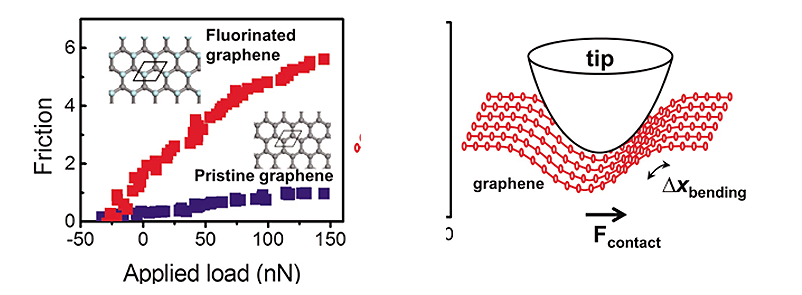

연구성과 10선
연구성과 10선
KAIST RESEARCH ACHIEVEMENTS
그래핀 마찰력의 비밀을
한꺼풀 벗기다.
나노과학기술대학원 · EEWS대학원 김용현 · 박정영
요약
마찰이나 마모에 대한 제품의 성능향상을 통해서 개발도상국의 경우 국내총생산의 1.6%를 절약할 수 있으며 미국의 경우 1조달러 이상을 절약할 수 있다는 통계가 있다. 이는 마찰력을 향상시키는 새로운 소재의 개발이 에너지 효율 향상 등과 밀접한 관계를 가지고 있으며 인간의 삶의 질 향상 및 국가 경쟁력 향상에 중요한 역할을한다. 나노테크놀리지의 발전은 나노크기에서 구동되는 기계(나노로봇)의 개발을 가능하게 할 것이다. 이러한 나노로봇은 인간의 몸 속이나 극한적인 상황 등에서 쓰일 수 있다. 나노 로봇은 그동안 접근하지 못했던 여러 곳을 접근하여 나노 수준의 새로운 정보를 수집하는 등의 다양한 기능을 수행 할 수 있다. 예를 들어 나노로봇은 인간의 혈관을 따라 가서 암세포 등을 제거 할 수도 있다. 이러한 구동기가 나노 크기로 가게됨에 따라 표면이 차지하는 비중이 커지며 마찰력이나 접착력의 중요성이 더 하게 된다. 본 연구에서 그래핀 소재의 나노마찰력 및 접착력 연구는 이러한 나노로봇의 개발의 기반기술을 제공한다.
연구내용
이 연구는 그래핀 표면의 화학적 처리를 통하여 나노스케일 마찰력의 제어기술을 보여주었을 뿐만 아니라 이차원 물질에서 마찰력 동작에 관한 새로운 메카니즘을 제시함으로써 마찰력 현상에 관한 근원적인 이해에 더 접근할 수 있었다. 이러한 성과가 추가적으로 개발되고 마찰력에 대한 원자수준에서의 이해가 완성된다면 원자수준 마찰력 제어기술을 확보할 수 있고 따라서 마찰력에 의한 에너지 소모를 획기적으로 제어할 수 있을 것으로 기대된다. 또한 그래핀을 이용한 새로운 개념의 나노구동소자 및 윤활제 개발의 응용도 가능하다.
그래핀은 우수한 기계적, 전기적 성질 덕분에 전자소자뿐만 아니라 초소형 기계 등 다양한 분야에서 응용이 가능한 차세대 물질이다. 그래핀은 고유 이방성 때문에 매우 우수한 마찰력 특성을 지니고 있으나, 나노스케일 마찰력의 근 본 동작원리에 대해서는 잘 알려져 있지 않다. 이 연구를 통하여 그래핀 표면의 화학처리를 통하여 굽힘 포논을 체계적으로 제어함으로써 나노스케일에서의 마찰력 제어가 원자수준에서 가능하다는 것을 최초로 제시할 수 있었다.
나노합성기술을 도입한 백금/카드뮴 황화물/금 빈껍질 나노촉매의 정밀 제조

그림 1. (좌) 그래핀의 불소화에 따른 마찰력 증가를 보여줌.
(우) 이차원 물질인 그래핀의 마찰력 거동을 보여줌.
마찰력은 현대생활의 거의 모든 곳에 존재하는 중요한 유비쿼터스 현상 중에 하나이지만, 나노스케일에서 마찰력 현상은 정확하게 이해되어지고 있지 않다. 전자기력의 일종으로 알려져 있으나 어떤 방식으로 마찰현상을 통해 에너지 소모가 발생하는지 보다 근본적이고 원천적인 이해가 필요하다. 그래핀은 우수한 기계적, 전기적 성질 덕분에 전자소자 뿐만 아니라 초소형 기계 등 다양한 분야에서 응용이 가능한 차세대 물질이다.
그래핀은 고유 이방성 때문에 매우 우수한 마찰력 특성을 지니고 있고 나노스케일 마찰력 동작 특성을 체계적으로 확인해 볼 수 있어, 최근 많은 관련 연구가 수행되어지고 있다. 하지만 그래핀의 마찰력 동작원리에 대해 체계적이고 합리적인 이해가 이루어지지 않고 있다. 이 KAIST 연구팀은 그래핀 마찰력을 원자수준에서 이해하기 위해 실험(고진공AFM/FFM)과 이론(DFT) 공동연구를 통해 불소화된 그래핀의 마찰력 특성을 비교, 분석하였다. 일반적으로 불소화 처리를 하게 되면 접착력 감소에 따라 마찰력이 감소하는 경향이 있는데, 그래핀의 경우 불소화 처리를 하게 되면 접착력이 감소함에도 불구하고 오히려 마찰력이 급격히 증가하는 현상을 발견하였다. 이는 벌크-그래핀의 삼차원-이차원 물질 접촉이 마찰력에 미치는 영향이 삼차원-삼차원 물질 접촉이 마찰력에 미치는 영향과 매우 다르다는 것을 의미한다.
이 연구팀은 벌크-그래핀의 접촉 상황을 분석함으로써, 기존의 해석과는 다르게 굽힘 포논(Flexural phonon)이 마찰력 증가에 매우 중요한 역할을 수행한다는 사실을 세계 최초로 밝혀냈다. 또한 그래핀 표면의 화학처리를 통하여 굽힘 포논을 체계적으로 제어함으로써 나노스케일에서의 마찰력 제어가 원자수준에서 가능하다는 것을 최초로 제시할 수 있었다. 이 결과는 나노분야의 권위지인 나노레터스에 게재되었으며 네이쳐 하이라이트로도 선정되었다. (Nature487, 143 (2012).
연구비 지원
S. Kwon, J.-H. Ko, K.-J. Jeon, Y.-H. Kim, and J. Y. Park, Nano Lett. 12, 6043 (2012). (Highlighted in Nature, Nature 487, 143 (2012).) J.-H. Ko, S. Kwon, I.-S. Byun, J. S. Choi, B. H. Park, Y.- H. Kim, and J. Y. Park, Tribol. Lett., (Tribol. Lett. 50, 137 (2013).) 교육과학기술부와 한국연구재단이 추진하는 WCU 육성사업과 중견 연구자지원사업의 지원을 받음.
연구실적
J. Am. Chem. Soc. 2012, 134, 1221-1227에 게재되었음. 다양한 불균일 촉매 반응을 대상으로 후속 연구 진행 중.